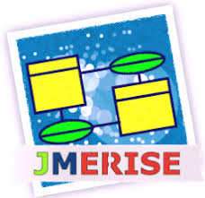
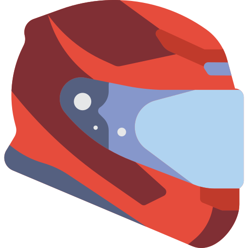
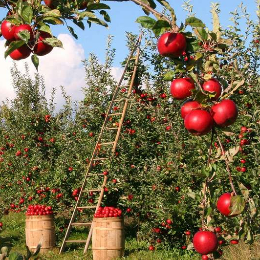

Présentation :
Bienvenue sur mon CV numérique, je m'apelle antoine egret, et je suis actuellement en formation developpeur web a Amiens dans l'école la Manu. A l'origine j'ai débuter mes études dans le graphisme pour le print puis je me suis tournée vers le digital qui offre de bien meilleur perspective d'avenir. Et c'est donc pour cela que je suis a la recherche d'un contrat d'alternance, afin d'obtenir le titre professionnel concepteur developpeur d'aplication mobile, Mais je suis ouvert a toute proposition.
language de programmation que j'utilise :


logiciel que j'utilise :



Hobbies :


Etudes & Formations
Expérience professionnel
